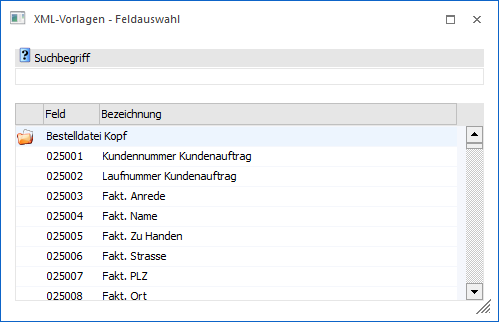
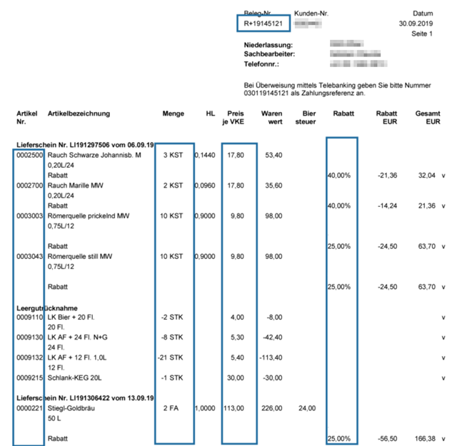
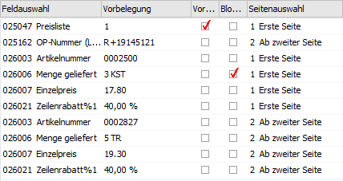
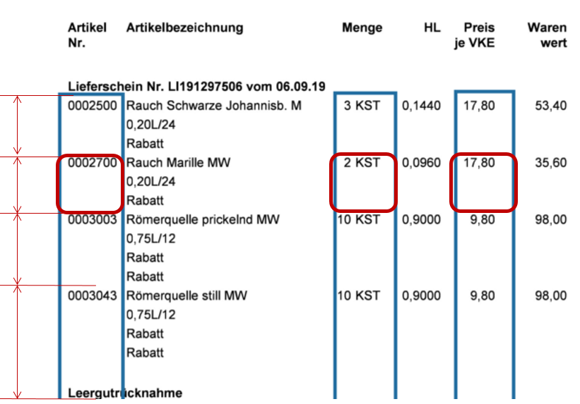
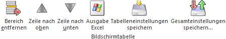

In der Tabelle "Bereichsauswahl" können die Buchungs-/Belegvariablen einem Bereich innerhalb der Musterrechnung zugewiesen werden und werden bei nachfolgenden Belegen berücksichtigt. Eine Vorbelegung eines bestimmten Wertes ist ebenfalls möglich.
Ø Feldauswahl
An dieser Stelle kann die Buchungs- bzw. Belegvariable, welche einem Bereich zugewiesen werden soll, hinterlegt werden. Durch Auswahl des Eintrags "999999 *** Matchcode öffnen ***" wird ein Matchcode geöffnet, über welchen nach der gewünschten Variable gesucht werden kann.

Wenn eine Variable gewählt wird, so kann diese in der Vorschau (rechts) mittels Maus maskiert werden. Hier könnte beispielsweise die Artikelnummer herangezogen werden und diese auf der ersten Seite mittels Maus maskiert werden. Die maskierten Bereiche sind anschließend in blauen Vierecken und der erste gefundene Wert innerhalb dieser Maskierung im Feld "Vorbelegung" ersichtlich.
Beispiel


Hinweis
Es kann pro Variable immer nur ein Bereich maskiert werden. Falls es bereits eine Maskierung gibt, wird die alte Maskierung gelöscht und nur noch die neue wird herangezogen.
Der erste innerhalb der Maskierung gefundene Wert wird im Feld "Vorbelegung" angezeigt.
Ø Vorbelegung
Wenn der Fokus in diesem Feld steht, kann entweder ein Text eingegeben oder mit der Maus ein Bereich innerhalb der Musterrechnung gezogen werden und der Bereich maskiert werden. Welcher Wert beim Maskieren mit der Maus erkannt wurde, wird ebenfalls in diesem Feld angezeigt.
Ø Vorb. verwenden
Wenn diese Checkbox aktiviert wird, wird die eingefügt Variable immer mit dem Wert, welcher im Feld "Vorbelegung" eingetragen ist, automatisch vorbelegt.
Beispiel
Hinweis:
Die automatische Berechnung der Fremdwährung bzw. des "FWBetrags" wird nur durchgeführt, sofern nur maximal ein Buchungsblock vorhanden ist.
Ø Präfix
In diesem Feld kann ein Wert vorbelegt werden, welcher vor dem markierten Bereich bzw. der eingetragenen Vorbelegung gestellt wird. Hier können auch Variablen der V50 mit der Syntax <VAR:x/y> angegeben, welche automatisch beim Beleg Pro Eingang ersetzt werden.
Beispiel
Ø Postfix
In diesem Feld kann ein Wert vorbelegt werden, welcher nach dem markierten Bereich bzw. der eingetragenen Vorbelegung gestellt wird. Hier können auch Variablen der V50 mit der Syntax <VAR:x/y> angegeben, welche automatisch beim Beleg Pro Eingang ersetzt werden.
Beispiel
Es wird die Variable "331006 Buchungstext" mit der Vorbelegung "Reinigung" vorbelegt und im Feld "Postfix" wird "<VAR:50/3> eingetragen. Beim Beleg Pro Eingang steht dann aufgelöst "Reinigung Kontoname" im Feld Buchungstext. (Natürlich wird der Kontoname mit dem Namen des gefundenen Personenkontos aufgelöst.
Ø Blockanfang
Bei der Einstellung "1 - Batchbeleg" im Bereich "Verarbeitungstyp" muss ein Blockanfang definiert werden, damit alle Felder diesem zugewiesen werden kann. Anhand der aktivierten Variable mit der Option "Blockanfang" wird von dem dort gefundenen Text bis zum nächsten darunter gefundenen Wert (im Hintergrund) ein Block nach links und rechts gebildet. Alle anderen maskierten Bereiche werden dann innerhalb dieses Blocks gefunden, sodass auch eine Menge zu einer Artikelnummer zugwiesen werden kann, auch wenn diese Informationen sich nicht innerhalb der gleichen Zeile befinden sollten.

Ø Seitenauswahl
An dieser Stelle erfolgt die Zuweisung zur Seite:
ü 1 - Erste Seite
Nach den
maskierten Variablen wird nur auf der ersten Seite des Eingangsbelegs
gesucht.
ü 2 - aber zweiter Seite
Nach der
getroffenen Bereichsauswahl wird ab der zweiten inkl. der letzten Seite
gesucht.
ü 3 - Ab zweiter bis vorletzte
Seite
Nach den maskierten Variablen wird nur von der zweiten bis zur
vorletzten Seite gesucht.
ü 4 - Letzte Seite
Nach den
maskierten Variablen wird nur auf der letzten Seite des Eingangsbelegs
gesucht.
Hinweis
Wenn die Maskierung für die letzte Seite anders als die vorherigen Seiten gesetzt werden soll, dann muss den Seitenauswahl-Varianten "3 - Ab zweiter bis vorletzte Seite" und "4 - letzte Seite" gearbeitet werden.
Tabellenbuttons

Ø Bereich entfernen
Durch Auswahl dieses Buttons wird die markierte Zeile gelöscht.
Ø Zeile nach oben / Zeile nach unten
Mit diesen Buttons können Zeilen innerhalb der Tabelle verschoben werden.
Ø Ausgabe Excel
Durch Anwahl des Buttons "Ausgabe Excel" wird der Inhalt der Tabelle an Microsoft Excel übergeben.
Ø Tabelleneinstellungen speichern
Die Spalten einer Tabelle können grundsätzlich an beliebige Positionen verschoben, bzw. in der Breite entsprechend angepasst werden. Durch Anwahl des Buttons "Tabelleneinstellungen speichern" werden die Einstellungen benutzerspezifisch gespeichert und bei dem nächsten Aufruf des Programmpunktes wieder vorgeschlagen.
Ø Gesamteinstellungen speichern
Im Gegensatz zu "Tabelleneinstellungen speichern" können mit "Gesamteinstellungen speichern" mehrere Tabellenaufbauten gespeichert und nach Wunsch geladen werden. Zusätzlich werden Sonderfunktionen der Tabelle (z.B. "Spalte gruppieren") ebenfalls bei der Speicherung bedacht.